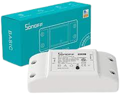
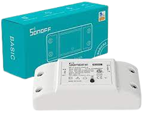

Sonoff Basic R2
Sonoff Basic R2
Sonoff Basic R2
Sonoff Basic R2
Prezzo: 14,9€
Il dispositivo sonoff basic r2 è uno dei tanti dispositivi che puoi collegare all`interno
di una scatola a muro per domotizzare quella luca o quel dispositivo domoticamente. Questo è possibile grazie ad
Amazon Alexa.
 

Ci sono anche i Sonoff Dual r3 che sono simili al sonoff basic, ma possono collegare direttamente due dispositivi
insieme, esempio tapparelle dove hai bisogno di due pulsanti per andare su e giù